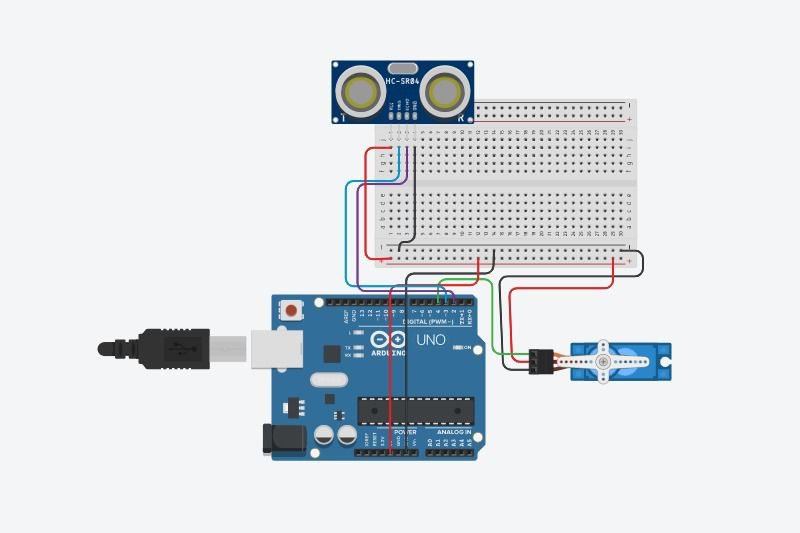

Dispenser Otomatis Menggunakan Sensor Gerak
Problem Yang Diangkat
Air merupakan kebutuhan pokok manusia untuk memenuhi kandungan mineral bagi tubuh. Pada jaman tradisional , masyarakat biasanya menempatkan air minum pada teko atau semacamnya untuk disimpan. Namun pada jaman modern ini masyarakat sudah mengenal yang namanya dispenser. Dispenser telah digunakan oleh banyak masyarakat. Pengambilan air pada dispenser masih dilakukan secara manual yaitu dengan cara membuka dan menutup keran pada dispenser. Meskipun terlihat mudah , pengguna juga harus mengeluarka sedikit tenaga untuk membukan dan menutup keran. Terkadang air yang di ambil berkebihan sehingga air terbuang sia-sia. Oleh karena itu untuk mengatasi masalah tersebut, kami meberikan solusi dengan membuat dispenser otomatis yang dapat medeteksi gerak dan volume air pada gelas.
Solusi Project
Dispenser otomatis ini akan menggunakan sensor sensor ultrasonic untuk medeteksi ada nya gelas yang datang. Ketika sensor ultrasonic mendeteksi gelas Servo akan langsung bekerja dan otomatis menarik keran dispenser. Kemudian sensor ultrasonic akan meeteksi ketinggian air pada gelas,ketika sudah cukup servo akan menutup keran dispenser.
{kind=link}
Dispenser yang hanya berfungsi sebagai tempat menyimpan air saja, dalam pemakaiannya, sebuah gallon berisi air minum harus disimpan dalam posisi terbalik diatas dispenser, kemudian sebuah keran yang didesain khusus untuk dispenser akan bekerja mengeluarkan air jika keran tersebut di tarik.
{kind=link}
Motor Servo adalah jenis Aktuator elektromekanis yang tidak berputar secara kontinu seperti motor DC atau motor stepper. Motor Servo SG90 adalah sebuah motor servo kecil dengan output power yang tinggi. Motor ini dapat berotasi sekitar 180 derajat dan bisa bekerja seperti servo standar lainnya hanya saja ukurannya lebih kecil. . Motor jenis ini digunakan dimana rotasi kontinu tidak diperlukan sehingga tidak digunakan untuk mengendalikan roda . Motor servo digunakan dimana sesuatu yang dibutuhkan pindah ke posisi tertentu dan kemudian berhenti dan bertahan pada posisi itu.
Sensor ultrasonik adalah sebuah sensor yang berfungsi untuk mengubah besaran (bunyi) menjadi besaran listrik dan sebaliknya. Cara kerja sensor ini didasarkan pada prinsip dari pantulan suatu gelombang suara sehingga dapat dipakai untuk menafsirkan eksistensi (jarak) suatu benda dengan frekuensi tertentu.
{kind=link}
Arduino Uno adalah board mikrokontroler berbasis ATmega328 (datasheet). Memiliki 14 pin input dari output digital dimana 6 pin input tersebut dapat digunakan sebagai output PWM dan 6 pin input analog, 16 MHz osilator kristal, koneksi USB, jack power, ICSP header, dan tombol reset.
{kind=link}
Mini breadboard merupakan jenis terkecil dari papan elektronil solderless yang satu ini. Mini breadboard digunakan untuk membuat sebuah rangkaian mini yang tidak membutuhkan komponen elektronik dalam jumlah banyak. Jumlah lubang koneksi yang dimiliki oleh mini breadboard adalah kurang lebih 170 titik. Titik koneksi digunakan sebagai jalur koneksi dari komponen-komponen elektronik tersebut.
{kind=link}
Kabel jumper adalah suatu istilah kabel yang ber-diameter kecil yang di dalam dunia elektronika digunakan untuk menghubungkan dua titik atau lebih dan dapat juga untuk menghubungkan 2 komponen elektronika. Kabel jumper jenis ini digunakan untuk koneksi male to male pada kedua ujung kabelnya. Fungsi kabel listrik sebagai jumper maksudnya ialah kabel berperan sebagai penghubung atau penghantar secara langsung arus listrik.
Arduino IDE adalah suatu perangkat lunak yang bersifat open source yang digunakan untuk memprogram Arduino. Arduino IDE menggunakan bahasa pemrograman Arduino yang mirip dengan bahasa pemrograman C dan C++ dengan pembeda berupa library yang melengkapi Arduino IDE. Struktur penulisan program dalam bahasa C harus memiliki fungsi utama, yang bernama main()
Analisis dan Diskusi Project
Cara Kerja
Dalam melakukan perancangan sistem, Dispenser otomatis ini akan menggunakan sensor sensor ultrasonic untuk medeteksi ada nya gelas yang datang. Ketika sensor ultrasonic mendeteksi gelas Servo akan langsung bekerja dan otomatis menarik keran dispenser. dispenser.Tinggi air didalam gelas sesuai tinggi yang sudah ditentukan, setelah gelas terisi sesuai tinggi yang ditentukan, lalu berhenti.
Perangkat Keras
Perangkat Lunak
Kesimpulan
Kesimpulan dari hasil pembuatan DISPENSER OTOMATIS dapat ditarik kesimpulan sebagai berikut
Referensi
PCB Wiring

Wiring Project